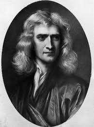

Isaac Newton
Una mela e la gravità

Biografia
Isaac Newton, matematico e fisico inglese, viene considerato uno dei più grandi scienziati di tutti i tempi. Nacque nel 1642 a Woolsthorpe, nel Lincolnshire, da una famiglia di allevatori; il padre morì quando era ancora piccolissimo e la madre si risposò con un uomo più anziano. Newton fu affidato alla cura dei nonni materni, un periodo da lui definito infelice; anni dopo, grazie alla morte del patrigno che gli lasciò una considerevole eredità, poté iscriversi al King’s College di Grantham.
Nel 1661 entrò all’università di Cambridge, nel 1667 divenne membro del Trinity College e nel 1669 professore lucasiano di matematica. Questo fu uno dei suoi periodi più fertili, come da lui stesso ammesso: in questi anni infatti iniziò la stesura di Philosophiae Naturalis Principia Mathematica, comunemente noti come Principia, che furono poi pubblicati nel 1687. Newton si oppose poi al tentativo del re Giacomo II di trasformare le università in istituzioni cattoliche, e fu eletto membro del parlamento per l’università di Cambridge nel 1689 e, trasferitosi a Londra, divenne guardiano della Zecca Reale nel 1696, e ne divenne presidente tre anni dopo. Divenne anche presidente della Royal Society e nel 1705 la regina Anna gli conferì il titolo di cavaliere. Morì a Kensington, Londra, il 20 marzo 1727 all'età di 84 anni e fu sepolto nell'Abbazia di Westminster.
Scoperte Scientifiche e Libri Scritti
Isaac Newton nel corso della sua vita ha fatto più scoperte in diversi campi quali la matematica, la fisica e la filosofia; ora elencheremo le 5 principali scoperte:
- La gravità e le leggi della dinamica
- Il calcolo differenziale
- La luce bianca e i colori
- La natura della luce
- La riforma monetaria
Home